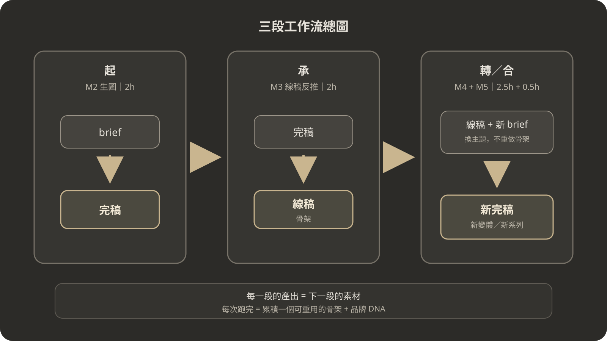

返回課程總覽
(02) · CH 1.2
三段工作流地圖 + 平台選擇
把「參考 → 解構 → 再造」的閉環思維套進具體工具：認識起 / 承 / 轉-合三段工作流，依工作流的能力需求挑選平台，選定適合自己預算的路線。時間：30 分鐘
學習成果
能繪出「生圖 → 轉線稿 → 線稿反控」三段工作流圖，並說明每段的輸入、工具、產出
能說明為什麼中間需要「線稿」這道中轉站，而不是從完稿 A 直接做完稿 B
能依功能、資料風險、預算與失敗恢復，寫出今天的主路徑、fallback 與離線路徑
今天結束時，你會交出
- 1 張三段工作流圖（生圖 → 轉線稿 → 線稿反控、手繪 / 文字描述皆可）
- 1 句話說明「為什麼需要線稿這道中轉站」（30 字內）
- 1 個你的路線決定（零預算 / 單付費 / 雙付費 + 30 字理由）
完成這 3 件就算過關。路線決定不必完美、3 個月後可改。
(01) · 看 / Observation｜5 min
一次性生圖 vs 三段閉環工作流
為什麼這很重要
上一堂學了「參考 → 解構 → 再造」的思維閉環。現在要把它落地：三段工作流是這個閉環在 AI 生圖上的具體操作版。沒有這張地圖，你很容易退回「下 prompt → 拿圖 → 結束」的一次性生圖模式，每次都從零開始。
把 CH1-1 的閉環套到 AI 生圖工作流上：
- 參考：公開網站只用來觀察與記錄可觀測屬性，不下載、不截圖重傳；實作一律用自有／明確授權素材或課程 READY reference pack
- 解構 + 再造：用 AI 生圖 → 轉線稿 → 線稿反控，把結構抽出來再重用
最常見的錯誤答案：「下 prompt 給 AI、AI 吐一張圖、我就用這張。」
這是一次性生圖思維——跟 CH1-1 的「模仿 → 複製」一模一樣，只是把「複印」的動作交給 AI。結果就是：每次都從零開始、每次品質靠運氣、每次拿到的圖都無法跟上次連動。
本課要教你的是三段閉環工作流——讓每次產出都累積可重用的「結構資產」，下次做圖從資產開始，不是從零開始。
三段工作流總圖（跟著畫在你的筆記本上）：

每次跑完 = 累積一個可重用的骨架 + 品牌 DNA
方框內的縮寫（PM 不必背、看到知道是什麼就好）：
・完稿 = 完稿（彩色商業廣告、可發 IG / 官網的成品）
・線稿 = 線稿（黑白骨架 + 日文佔位符、把版面結構抽出來的中轉圖）
・M = Module（對應課程模組編號）
思考一下（30 秒）：
為什麼中間要多一個「線稿」環節？直接從完稿 A 到完稿 B 不行嗎？
不行。完稿包含太多表象（色彩、字體、紋理），直接從完稿 A 做完稿 B，AI 會連表象一起複製過去——做出來的就是「把 A 改成 B」的山寨貨，不是屬於 B 的作品。
線稿是「脫掉表象、只留結構」的中轉站。透過線稿，結構可以乾淨地傳承到下一段，表象則完全替換。
(02) · 學 / Learn｜三段工作流逐段解說｜10 min
起 / 承 / 轉-合：三段各自做什麼
三段工作流各有明確的輸入、工具、產出，以及你這位 PM 扮演的角色：
第一段｜起：商業廣告生圖
對應 M2，約 2h
輸入
業種 / 商品 / 客群 / 訴求 / 必要元素 / 風格 preset（brief 六件套，CH2-2 會詳教）
工具
依平台檢查卡選擇當日可生成指定比例、可附 reference 且資料控制符合需求的路徑
產出
1 張完稿（完稿高保真，日系為教學基準、其他風格 preset 為演練延伸）
你的角色
需求判定者
把模糊想法結構化成 brief 六件套、選骨架、選風格 preset
把模糊想法結構化成 brief 六件套、選骨架、選風格 preset
本段要學
5 種跨風格通用版面骨架（CH2-1）、brief 六件套組成 prompt（CH2-2）、多主題演練（PRAC2）
關鍵認知
完稿本身不是終點——它是下一段的素材。
第二段｜承：圖轉線稿
對應 M3，約 2h
輸入
上一段的自產完稿，或自有／明確授權／課程 READY reference；權利不明的商業廣告只可觀察，不可下載或上傳
工具
優先用支援同對話編修的路徑；新對話則重新附 reference、保留／可改／禁止條件與驗收表
產出
1 張灰階線稿——保留物件輪廓、去掉色彩紋理、文字換佔位符
你的角色
骨架驗收者
用驗收提問 B 檢查 AI 反推的線稿是否可繼承（輪廓清晰、色彩移除、佔位符正確、形狀一致、位置不變、風格像 wireframe）
用驗收提問 B 檢查 AI 反推的線稿是否可繼承（輪廓清晰、色彩移除、佔位符正確、形狀一致、位置不變、風格像 wireframe）
本段要學
線稿反推（CH3-1）、從線稿讀出結構語言（CH3-2）、線稿反推演練（PRAC3）
關鍵認知
結構骨架——一張可重複使用的、跨業種的、跨配色的、跨風格的「版面藍圖」。
第三段｜轉 / 合：線稿反控圖片
對應 M4 + M5，約 3h
輸入
線稿 + 新 brief（新業種 / 新主題 / 品牌 DNA）
產出
新的完稿變體 / 系列
3 種用法
(1) 同線稿 × 跨產業套用（CH4-1）——線稿是「空房間」、新業種是「新住戶」
(2) 同線稿 × 多變體（CH4-2）——AB 版面探索，挑最適合的
(3) 同線稿 × 品牌 DNA（CH4-3）——繼承式設計，產出視覺一致的系列
(2) 同線稿 × 多變體（CH4-2）——AB 版面探索，挑最適合的
(3) 同線稿 × 品牌 DNA（CH4-3）——繼承式設計，產出視覺一致的系列
整合實戰
CH5-1：一次跑完 brief → 完稿 A → 線稿 → 完稿 B → 完稿 C，產出「一個品牌 3 張系列」
你的角色
系列把關者
建立 brand-dna.md、用驗收提問 C 檢查 AI 產出的 3 張系列是否都守在品牌 DNA 內（色票、字族、禁用、骨架、語氣）
建立 brand-dna.md、用驗收提問 C 檢查 AI 產出的 3 張系列是否都守在品牌 DNA 內（色票、字族、禁用、骨架、語氣）
關鍵認知
規模化與一致性——指的是可複製、可傳承、可建立品牌系列的能力，不只完成單張作品。
(03) · 學 / Learn｜為什麼要分三段｜3 min
一次性生圖的問題，三段閉環的解法
一次性生圖的問題
每次都從零開始，結構沒累積
修一張只能重跑，不能局部調整
跨系列（春夏秋冬 4 張）沒辦法保持風格一致
模型升級後，舊 prompt 可能跑不出來
三段閉環的好處
結構（線稿）可以保存，重複使用
新主題只要換 brief、不用重新發明版面
品牌 DNA + 骨架 = 系列化資產
模型升級不影響骨架（骨架是結構知識、不綁定模型）
你不是在學「用 AI 畫圖」，是在用 AI 當執行團隊去實踐 PM 的三位一體協作（CH1-1 已建立）：需求判定 / 骨架驗收 / 系列把關。AI 負責生成，你負責下需求、驗收、把關。
(04) · 學 / Learn｜適用平台類型與能力需求｜5 min
本課適用的平台類型與工作流能力需求
本課不綁定方案或模型名稱。先用 開課日平台檢查卡，在你今天的地區、帳號與方案實測能力；價格、額度、等待時間與介面不寫成永久結論。
| 能力需求 | 為什麼需要 | 當場證據與 fallback |
|---|---|---|
| 同對話延續編輯 | 第二段完稿 → 線稿反推需要 AI 看到原圖當 context | 同一對話完成一次生成與修改；失敗就保存 prompt 與原圖，切換另一條已驗證路徑 |
| 文字渲染（中 / 日 / 英） | 主標 / 商品名 / CTA 可能要直接產文字 | 把生成文字視為草稿；逐字校對，必要時改用設計軟體後製 |
| 結構保留能力 | 線稿反推時必須保留物件位置與形狀 | 用 reference 前後對照；選區外若被改動，回到原圖或改成人工後製 |
| 多比例切換（1:1 / 4:5 / 9:16） | IG / Story / EDM 不同尺寸 | 實測至少一種交付比例；不支援時先留安全區再人工裁切 |
安全停止條件：客戶檔案、可辨識人物、未公開商品或權利不明的 reference，在權利、人物同意、資料使用與刪除路徑確認前不要上傳。改用課程 READY reference pack 照樣可完成練習。
(05) · 💡 Tip｜開課日查核
能力、資料與條款都要有當日證據
開啟平台檢查卡再決策。官方功能頁證明平台宣稱什麼；你的最小實測證明此帳號今天能做什麼。兩者都要記錄。
| 查核面向 | 要記錄的證據 | 不通過時 |
|---|---|---|
| 功能 | 生成、reference、局部修改與比例的實測截圖／錯誤訊息 | 切另一條已驗證平台或用預製候選 |
| 資料 | 官方訓練、保留、刪除與第三方處理說明 | 只用課程 pack，不上傳敏感或客戶素材 |
| 條款 | 輸入權利、輸出使用、相似性、商標與揭露條款連結 | 標記 REVISE／STOP，不能用平台名稱代替權利審查 |
| 預算與限制 | 查核日期、地區、帳號類型、實際方案與限制 | 保留 prompt、L2、QA 等離線學習產出 |
官方入口與 2026-10-16 能力基準已集中在 platform-check-card.md，課文不複製易變數字。
(06) · 學 / Learn｜平台決策路線
主路徑 / fallback / 離線路徑——今天怎麼完成？
用功能、資料風險、預算與失敗恢復四個維度選路。是否付費只是當日條件，不代表品質或權利一定通過：
路線 1｜主路徑
配置今天實測能完成生成、reference 或局部修改的帳號。
記錄實測證據與不可上傳的素材類型。
路線 2｜fallback
配置另一個已驗證入口，或用設計軟體補字、裁切與局部後製。
主路徑中斷時，不要在未知條款下臨時上傳客戶素材。
路線 3｜離線可完成
配置課程 READY reference pack、預製候選、prompt、L2 骨架與人工 QA。
即使所有平台都不可用，仍能完成 reference 分工、驗收與 release gate。
升級判準：只有當目前路徑無法滿足具體功能、資料治理或產量需求，而且官方條款與實測都通過時，才評估付費。平台或付費方案都不構成商用安全保證。
(07) · 做 / Hands-on｜7 min
活動：選定路線 + 繪工作流圖
繪工作流圖（3 min）
拿出筆記本或手機備忘錄，畫出或寫出三段工作流：
三個方框：起 / 承 / 轉-合；每個方框內寫：輸入 / 工具 / 產出；方框之間用箭頭連接。
預期成果：1 張工作流圖（手繪或文字條列皆可），能在 30 秒內解釋給別人聽。
三個方框：起 / 承 / 轉-合；每個方框內寫：輸入 / 工具 / 產出；方框之間用箭頭連接。
預期成果：1 張工作流圖（手繪或文字條列皆可），能在 30 秒內解釋給別人聽。
填平台檢查卡 + 選路線（3 min）
開啟 平台檢查卡，至少檢查一個主平台與一個 fallback：功能最小測試、資料控制、官方條款與今天的帳號限制。
查完後回答：我的主路徑、fallback 與離線路徑是什麼？哪些素材不能上傳？決策理由需包含功能、資料風險、預算與失敗恢復。
查完後回答：我的主路徑、fallback 與離線路徑是什麼？哪些素材不能上傳？決策理由需包含功能、資料風險、預算與失敗恢復。
分享（1 min）
2–3 人一組，快速分享各自的路線選擇。沒有「正確答案」，每個人的預算、頻率、品質需求不同。重點是你能說出理由，不是你選哪條。
完成標準（self-check）
- 工作流圖含三段（起 / 承 / 轉-合）+ 箭頭方向正確
- 每段寫出輸入、工具、產出 3 個欄位
- 能用 30 秒口述說出三段的意義與產出
- 選定主路徑、fallback 與離線可完成路徑
- 決策理由含功能、資料風險、預算與失敗恢復
(08) · 常見錯誤 3 條
三個你很可能會踩的雷
錯誤 01
沒有能力與資料證據就升級方案
現象
還沒做功能與資料查核就同時升級多個平台，付費後才發現所在地區、帳號或資料政策不符合工作需求。
原因
方案名稱與價格不能證明特定任務的品質、穩定度、資料治理或權利狀態；同一服務也可能因地區、帳號與版本而不同。
解法
先完成平台檢查卡。只有目前路徑缺少具體能力、資料治理或產量，而且新方案已通過官方條款與最小實測，才評估升級。
錯誤 02
只看平台名稱，不核對任務所需能力
現象
沿用熟悉的平台，卻沒有先確認當日是否支援 reference、同對話編修、局部修改、輸出比例與資料控制。做到線稿反推才發現無法保留結構或不能安全上傳素材。
原因
平台功能、帳號權限與介面會變；品牌名稱不能替代能力與資料風險查核。本課需要生成、reference、可控編修、可下載、失敗恢復與人工驗收證據。
解法
先用平台檢查卡做一張最小測試。主路徑缺能力時，切到已驗證的替代路徑；兩者都不可用時，以課程 READY reference 完成離線分析與驗收紀錄。
錯誤 03
不做平台分工（全部塞給一個工具）
現象
選了零預算路線後，整個課程全部用同一個平台跑。結果：複雜 prompt 時遵循度不夠高；多比例切換頻頻跑回原尺寸；一整天下來免費配額用爆。
原因
每個平台都有強項與弱項、且強弱項每季都在變。「全部塞給一個工具」會讓你在工具當前弱項的任務上挫折——若你有兩家帳號、就該交叉用。
解法
基本分工建議（任務導向、不指定品牌）：
第一段生圖 → 簡單 brief 兩家任一；複雜 brief / 多比例切換 → 用 prompt 遵循度當下表現較好的那家
第二段完稿 → 線稿 → 哪家同對話延續編輯最穩、就用哪家
第三段品牌繼承 → 哪家 identity 一致性當前表現好、就用哪家
最後交付 → 在相容工具中後製、逐字校稿、保留來源與權利證據
心法：「能力導向、證據導向」——用同一份 brief 與驗收表做最小實測，記錄日期、帳號層級、輸入與輸出；平台更新或帳號條件改變就重查。
第一段生圖 → 簡單 brief 兩家任一；複雜 brief / 多比例切換 → 用 prompt 遵循度當下表現較好的那家
第二段完稿 → 線稿 → 哪家同對話延續編輯最穩、就用哪家
第三段品牌繼承 → 哪家 identity 一致性當前表現好、就用哪家
最後交付 → 在相容工具中後製、逐字校稿、保留來源與權利證據
心法：「能力導向、證據導向」——用同一份 brief 與驗收表做最小實測，記錄日期、帳號層級、輸入與輸出；平台更新或帳號條件改變就重查。
(09) · 檢核題 2 條
確認你已經理解三段工作流與平台決策
Q1（概念驗證｜簡答）：請用自己的話寫或畫出「生圖 → 轉線稿 → 線稿反控」三段工作流，並說明：為什麼要多中間「線稿」這段？一步到位從完稿 A 直接做完稿 B 不行嗎？
寫在筆記本 / 備忘錄，能說出以下要點的 3 點以上即通過：
- 三段工作流圖：起（brief → 完稿）→ 承（完稿 → 線稿）→ 轉-合（線稿 + 新 brief → 新完稿）
- 中間要有線稿是因為完稿包含太多表象（色彩、字體、紋理），直接從完稿做完稿會把表象複製過去
- 線稿脫掉表象、只留結構，讓結構可以乾淨傳承到下一段
- 線稿是可重複使用的資產（同一張線稿可套多個新業種 / 多個變體 / 多個品牌主題）
- （加分）一步到位等於「模仿 → 複製」，三段閉環等於「參考 → 解構 → 再造」
不及格的答案（確認自己沒有這些）
只畫三個方框沒寫理由；「因為老師說要這樣」；「這樣比較好看」（錯誤：線稿跟好不好看無關，是關於結構傳承）。
Q2（應用驗證｜PM 決策情境題）：主線 A 老闆每週只有 2 小時可練習，手上有未公開商品圖，今天的主平台可以生圖但尚未確認資料保留與刪除。請提出：(1) 主路徑、(2) fallback、(3) 哪些素材先停止上傳、(4) 如何在平台中斷時完成作業。
對照以下要點檢查你的答案：
- 主路徑：只用課程 READY reference 做最小功能測試，記錄日期、帳號與實測結果
- 停止條件：未公開商品圖在資料保留、訓練與刪除路徑未確認前不上传
- fallback：切到另一個已驗證入口，或用預製候選做 L2 與人工 QA
- 理由：功能、資料風險、預算與恢復路徑都有證據；是否付費不取代資料與權利審查
不及格的答案（確認自己沒有這些）
「直接上傳，付費方案應該比較安全」；「先試再說、不必看資料政策」；「平台掛掉就等下次」。這些都缺少停止條件與可完成的 fallback。